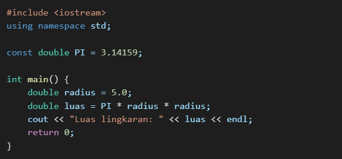

1. Variabel dalam C++
a. Pengertian Variabel
Variabel adalah tempat penyimpanan data dalam memori yang memiliki nama dan tipe data tertentu.
b. Deklarasi dan Inisialisasi Variabel
Di C++, variabel harus dideklarasikan sebelum digunakan. Format umum deklarasi variabel:
Contoh:
c. Aturan Penamaan Variabel
- Hanya boleh mengandung huruf, angka, dan garis bawah (_).
- Harus dimulai dengan huruf atau garis bawah (_), tidak bisa dengan angka.
- Tidak boleh menggunakan kata kunci C++ (seperti int, float, return, dll.).
d. Jenis - Jenis Variabel
- Variabel Lokal: Hanya dapat digunakan dalam fungsi atau blok tempat dideklarasikan.
- Variabel Global: Dideklarasikan di luar fungsi dan dapat diakses oleh seluruh bagian program.
- Variabel Statis: Nilainya tetap ada dalam memori sepanjang program berjalan.
- Variabel Register: Disimpan dalam register CPU untuk akses lebih cepat.
Contoh penggunaan variabel global dan variabel lokal:
2. Konstanta dalam C++
a. Pengertian Konstanta
Konstanta adalah nilai tetap yang tidak dapat diubah selama program berjalan.
b. Cara Mendeklarasikan Konstanta
Menggunakan const:
Menggunakan #define:
Perbedaan const dan define
| Perbedaan | Const | #define |
|---|---|---|
| Tipe data | Memiliki tipe data | Tidak memiliki tipe data |
| Penggunaan | Berlaku dalam lingkup blok kode | Berlaku di seluruh file |
| Keamanan | Lebih aman karena dicek saat kompilasi | Tidak dicek saat kompilasi |
Contoh penggunaan const:
